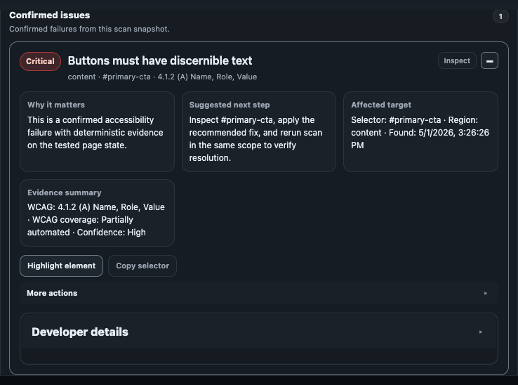
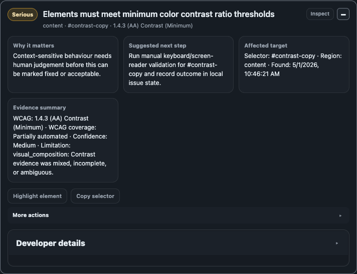

Review taxonomy
Review categories
Review buckets indicate uncertainty or contextual dependence and require manual judgement before filing defects.

Manual / Incomplete / Review Items
These items represent checks automation could not safely resolve in the current state. Treat them as review tasks, not automatic failures or passes.
Visual Composition Review and Human Judgement Review
- Visual Composition Review: layout/spacing/focus visibility/grouping relationships needing human visual judgement.
- Human Judgement Review: semantics, naming quality, link purpose, content clarity, and context-driven behavior requiring person-led validation.

Engine-limited and State-limited Review
Engine-limited: scanner/runtime could not fully evaluate due missing computed information or blocked inspection context.
State-limited: only the current UI state was scanned; hidden or unopened states may contain additional issues.
Advisory Notes
Advisories are quality guidance signals. They are useful for consistency and governance but are not automatically WCAG failures.
What to do next
- Reproduce the context where the review item appeared.
- Document manual findings and rationale.
- Escalate confirmed defects after human validation.